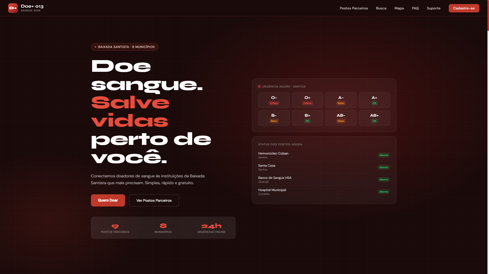
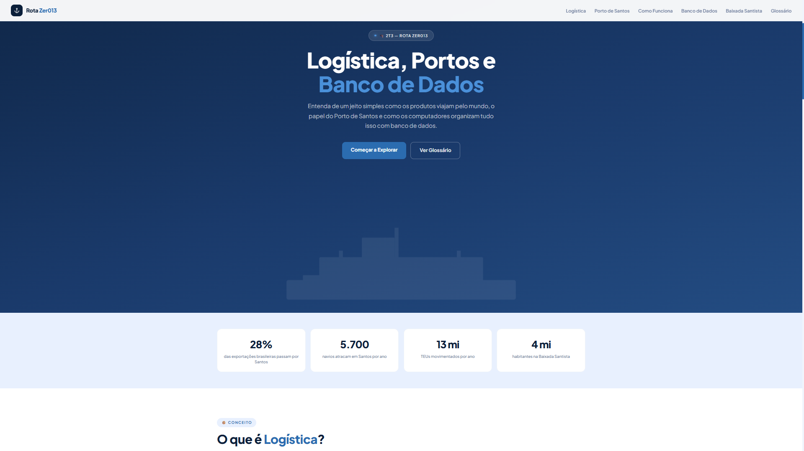
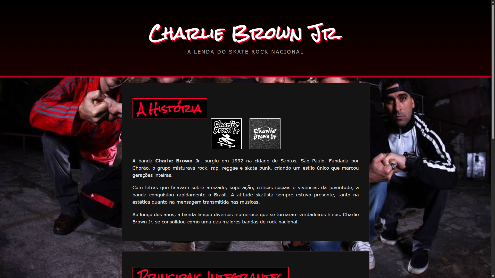

Estudante • Desenvolvedor
Sejam bem-vindo ao meu portfólio! Aqui você vai conhecer um pouco sobre mim e conferir alguns dos trabalhos que desenvolvi durante os 6 meses de curso, tanto individualmente quanto em equipe. Cada projeto me ajudou muito a aprender novas tecnologias, melhorar minhas habilidades e ganhar mais experiência na área de desenvolvimento.


